Chỉ số | Nhân viên | Khách hàng | p-value |
|---|---|---|---|
Số quan sát (n) | 96 | 92 | 0,707 |
Trung bình ± SD | 2,2 ± 1,5 | 2,4 ± 1,9 | |
Trung vị (IQR) | 2 (2) | 2 (1) | |
Min - Max | 1 - 8 | 1 - 10 |
—
title: “CẢI TIẾN CHẤT LƯỢNG NHÀ VỆ SINH BỆNH VIỆN 30-4” author: ” PHÒNG KẾ HOẠCH TỔNG HỢP ” format: docx: toc: false number-sections: false fig-dpi: 300 # optional for PNG fallback dev: dml # chèn ggplot dạng vector reference-doc: “source/5s_template_words_input.docx” fig-align: center
#bibliography: sstt_reference.bib bibliography: “source/5s.bib” csl: “source/ama-brackets.csl” lang: vi language: labels: fig: Hình editor: source
LỜI NÓI ĐẦU
Success is not final, failure is not fatal: It is the courage to continue that counts. – Winston Churchill, The best way to predict the future is to invent it. – Alan Kay
TP Hồ Chí Minh: 11:17 sáng, CHỦ NHẬT, NGÀY 22 THÁNG 6 NĂM 2025
ĐẶT VẤN ĐỀ
Nhà vệ sinh bệnh viện là không gian chức năng thiết yếu, ảnh hưởng trực tiếp đến sự hài lòng của người bệnh, nhân viên y tế và chất lượng chăm sóc y tế nói chung. Trong hệ thống tiêu chí chất lượng bệnh viện Việt Nam (Quyết định số 6858/QĐ-BYT, ngày 18/11/2016), tiêu chí về vệ sinh môi trường, đặc biệt là nhà vệ sinh, được đánh giá như một thành phần quan trọng trong kiểm soát nhiễm khuẩn và an toàn người bệnh.
Tại Bệnh viện 30-4, thực trạng nhà vệ sinh vẫn còn nhiều hạn chế về điều kiện vật chất, mùi hôi, thiết bị vệ sinh và sự hài lòng của người sử dụng. Do đó, việc khảo sát thực trạng nhà vệ sinh và đề xuất giải pháp cải tiến là nhiệm vụ cấp thiết nhằm đảm bảo môi trường làm việc và điều trị sạch sẽ, an toàn, chuyên nghiệp.
Mô hình 5S (Sàng lọc – Sắp xếp – Sạch sẽ – Săn sóc – Sẵn sàng), vốn được áp dụng hiệu quả trong cải tiến chất lượng và quản lý môi trường làm việc tại nhiều đơn vị y tế, là một hướng tiếp cận phù hợp để nâng cao chất lượng vệ sinh nhà vệ sinh bệnh viện. Việc kết hợp mô hình 5S với công cụ khảo sát số hóa, phân tích dữ liệu và báo cáo tự động sẽ góp phần hiện đại hóa quy trình quản lý vệ sinh môi trường.
MỤC TIÊU NGHIÊN CỨU
Mục tiêu tổng quát
Ứng dụng mô hình 5S trong khảo sát, đánh giá và cải tiến chất lượng vệ sinh môi trường nhà vệ sinh tại Bệnh viện 30-4.
Mục tiêu cụ thể
- Khảo sát thực trạng điều kiện vệ sinh nhà vệ sinh tại tất cả các khoa/phòng/trung tâm trong bệnh viện.
- Phân tích các vấn đề tồn tại về biển báo, thông gió, sàn, thiết bị và vật dụng vệ sinh.
- Đề xuất giải pháp cải tiến theo mô hình 5S phù hợp với điều kiện thực tế của bệnh viện.
- Xây dựng báo cáo tự động và trực quan hóa dữ liệu khảo sát bằng R, Quarto và Shiny.
TỔNG QUAN TÀI LIỆU
Vai trò của nhà vệ sinh trong chất lượng bệnh viện
Nhà vệ sinh bệnh viện không chỉ là không gian thiết yếu phục vụ nhu cầu sinh lý mà còn phản ánh môi trường chăm sóc toàn diện của cơ sở y tế. Nhiều nghiên cứu chỉ ra rằng mức độ sạch sẽ, an toàn và đầy đủ vật dụng trong nhà vệ sinh có ảnh hưởng trực tiếp đến sự hài lòng và tâm lý của người bệnh cũng như nhân viên y tế [@nguyen2020chatluong; @ngoc2021danhgia].
Bộ Y tế Việt Nam đã chính thức ban hành Bộ tiêu chí chất lượng bệnh viện theo Quyết định số 6858/QĐ-BYT, trong đó tiêu chí A2.4 yêu cầu đánh giá nhà vệ sinh bệnh viện dựa trên các khía cạnh như vị trí, biển chỉ dẫn, mức độ sạch sẽ, tình trạng thiết bị và độ hài lòng của người sử dụng [@bo_yte2016tieuchibenhvien].
Mô hình 5S trong cải tiến môi trường y tế
Mô hình 5S (Sàng lọc – Sắp xếp – Sạch sẽ – Săn sóc – Sẵn sàng) có nguồn gốc từ Nhật Bản, đã được áp dụng rộng rãi tại nhiều quốc gia như một công cụ cải tiến liên tục (Kaizen) trong quản lý chất lượng, đặc biệt là trong ngành y tế [@hoshino2020japanesekaizen]. Mô hình này giúp tổ chức lại không gian làm việc gọn gàng, nâng cao hiệu suất, cải thiện vệ sinh và giảm thiểu sai sót.
Tại Việt Nam, mô hình 5S được đưa vào triển khai thí điểm ở nhiều bệnh viện và mang lại kết quả tích cực trong công tác kiểm soát nhiễm khuẩn, nâng cao chất lượng phục vụ và cải thiện môi trường bệnh viện [@le2018ungdung5s].
Ứng dụng công nghệ trong khảo sát và đánh giá chất lượng vệ sinh
Với sự phát triển của công nghệ số, các công cụ khảo sát trực tuyến và phân tích dữ liệu như Google Forms, R, Shiny và Quarto đang được ứng dụng để thu thập, tổng hợp và trực quan hóa dữ liệu vệ sinh trong bệnh viện [@pham2023shiny]. Những công cụ này giúp tiết kiệm thời gian, tránh bỏ sót, đồng thời tăng tính khách quan trong đánh giá và đề xuất cải tiến.
Nhiều mô hình nghiên cứu hành vi người dùng nhà vệ sinh cũng cho thấy việc cung cấp phản hồi trực tiếp và báo cáo tự động có thể làm tăng mức độ tuân thủ vệ sinh và ý thức giữ gìn môi trường chung [@sato2019toiletbehavior].
ĐỐI TƯỢNG VÀ PHƯƠNG PHÁP NGHIÊN CỨU
Thiết kế nghiên cứu
Đây là một nghiên cứu mô tả cắt ngang, được thực hiện nhằm khảo sát thực trạng và đánh giá mức độ đạt chuẩn của các điều kiện vệ sinh tại nhà vệ sinh trong khuôn viên Bệnh viện 30-4.
Địa điểm và thời gian nghiên cứu
- Địa điểm: Bệnh viện 30-4, TP. Hồ Chí Minh
- Thời gian: Từ tháng … đến tháng … năm 2025
Đối tượng nghiên cứu
- Các nhà vệ sinh đang sử dụng tại các khoa phòng, khu hành chính và khu khám bệnh của Bệnh viện 30-4.
- Đơn vị khảo sát là mỗi phòng vệ sinh.
Tiêu chí chọn mẫu
- Bao gồm toàn bộ nhà vệ sinh đang hoạt động trong thời gian khảo sát tại bệnh viện.
- Không bao gồm các nhà vệ sinh đang sửa chữa hoặc ngưng sử dụng tại thời điểm khảo sát.
Cỡ mẫu và phương pháp chọn mẫu
- Phương pháp chọn mẫu: chọn mẫu toàn bộ (toàn bộ các nhà vệ sinh hợp lệ được khảo sát).
KẾT QUẢ NGHIÊN CỨU
So sánh số lần vệ sinh trong 24 giờ giữa nhà vệ sinh Nhân viên và Khách hàng
Bảng
Trung bình số lần vệ sinh trong 24 giờ ở nhà vệ sinh dành cho Khách hàng là 2,4 ± 1,9,
Biểu đồ
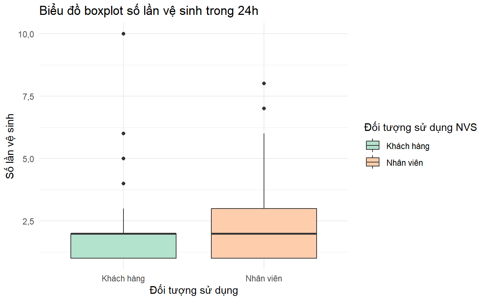
Kiểm định Mann-Whitney cho thấy sự khác biệt giữa hai nhóm không có ý nghĩa thống kê (p = 0,707).
Biểu đồ top 7khoa phòng số lần đi vệ sinh
7 khoa phòng số lần đi vệ sinh cao nhất
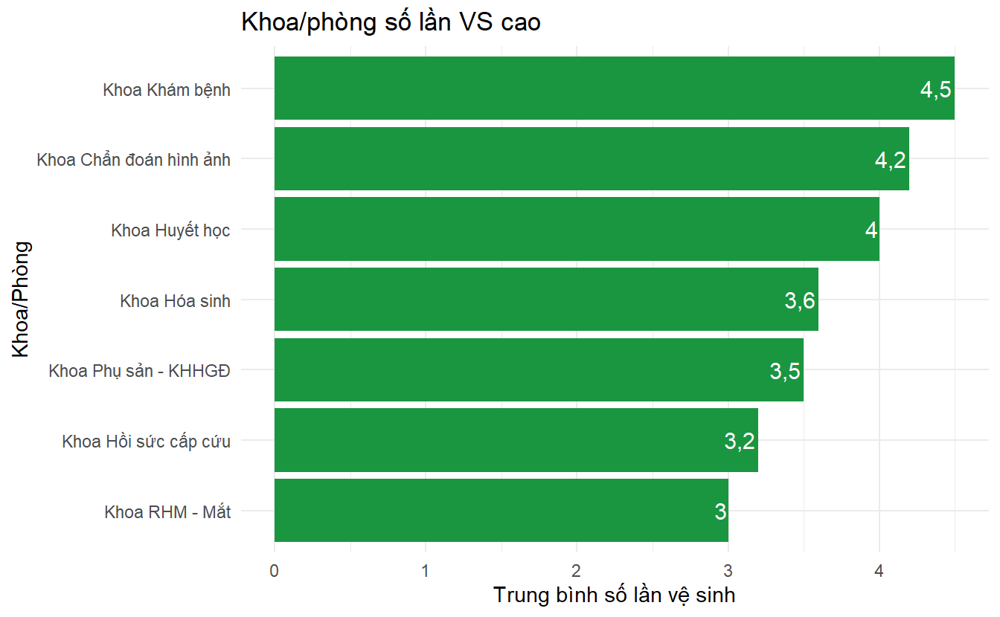
Top 7 đơn vị có tần suất vệ sinh cao nhất bao gồm: Khoa Khám bệnh, Top 7 đơn vị có tần suất vệ sinh cao nhất bao gồm: Khoa Chẩn đoán hình ảnh, Top 7 đơn vị có tần suất vệ sinh cao nhất bao gồm: Khoa Huyết học, Top 7 đơn vị có tần suất vệ sinh cao nhất bao gồm: Khoa Hóa sinh, Top 7 đơn vị có tần suất vệ sinh cao nhất bao gồm: Khoa Phụ sản - KHHGĐ, Top 7 đơn vị có tần suất vệ sinh cao nhất bao gồm: Khoa Hồi sức cấp cứu, Top 7 đơn vị có tần suất vệ sinh cao nhất bao gồm: Khoa RHM - Mắt
7 khoa phòng số lần đi vệ sinh thấp nhất
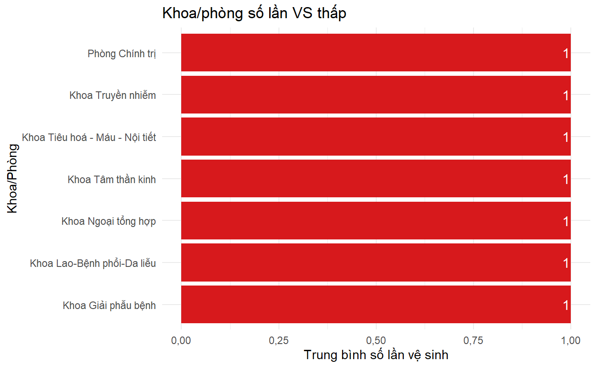
Top 7 đơn vị có tần suất vệ sinh thấp nhất bao gồm: Khoa Giải phẫu bệnh, Top 7 đơn vị có tần suất vệ sinh thấp nhất bao gồm: Khoa Lao-Bệnh phổi-Da liễu, Top 7 đơn vị có tần suất vệ sinh thấp nhất bao gồm: Khoa Ngoại tổng hợp, Top 7 đơn vị có tần suất vệ sinh thấp nhất bao gồm: Khoa Tiêu hoá - Máu - Nội tiết, Top 7 đơn vị có tần suất vệ sinh thấp nhất bao gồm: Khoa Truyền nhiễm, Top 7 đơn vị có tần suất vệ sinh thấp nhất bao gồm: Khoa Tâm thần kinh, Top 7 đơn vị có tần suất vệ sinh thấp nhất bao gồm: Phòng Chính trị
Điều kiên chung
Nhân viên và Khách hàng ### Bảng
Tiêu chí | Số không đạt | Số đạt | Tỷ lệ không đạt (%) | Tỷ lệ đạt (%) |
|---|---|---|---|---|
1. Biển chỉ dẫn đến nhà vệ sinh | 148 | 40 | 78,7 | 21,3 |
10. Biển cảnh báo té ngã | 169 | 19 | 89,9 | 10,1 |
11. Chuông bấm hoặc điện thoại khi gặp sự cố | 184 | 4 | 97,9 | 2,1 |
12. Bảng checklist thực hiện vệ sinh cho nhân viên vệ sinh | 168 | 20 | 89,4 | 10,6 |
2. Nhà vệ sinh được đánh số | 170 | 18 | 90,4 | 9,6 |
3. Quy định (hướng dẫn) sử dụng nhà vệ sinh | 145 | 43 | 77,1 | 22,9 |
4. Đảm bảo thông gió (quạt hút, cửa thông gió) | 73 | 115 | 38,8 | 61,2 |
5. Đảm bảo ánh sáng | 33 | 155 | 17,6 | 82,4 |
6. Mùi hôi | 73 | 115 | 38,8 | 61,2 |
7. Nước sạch để rửa tay, nước để dội bồn cầu | 23 | 165 | 12,2 | 87,8 |
8. Bảng hướng dẫn rửa tay | 68 | 120 | 36,2 | 63,8 |
9. Tay vịn trong nhà vệ sinh | 169 | 19 | 89,9 | 10,1 |
🔎 Trong số các điều kiện chung, tiêu chí 7. Nước sạch để rửa tay, nước để dội bồn cầu có tỷ lệ đạt cao nhất (87,8%),
tiếp theo là 5. Đảm bảo ánh sáng (82,4%) và 8. Bảng hướng dẫn rửa tay (63,8%).
Biểu đồ
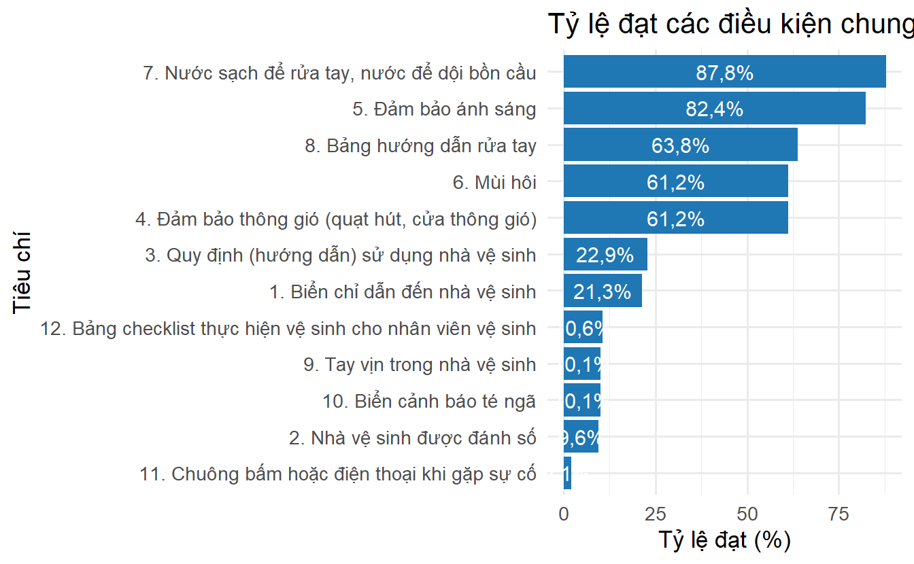
🔎 Trong số các điều kiện chung, tiêu chí 7. Nước sạch để rửa tay, nước để dội bồn cầu có tỷ lệ đạt cao nhất (87,8%),
tiếp theo là 5. Đảm bảo ánh sáng (82,4%) và 8. Bảng hướng dẫn rửa tay (63,8%).
Biểu đồ điều kiện high
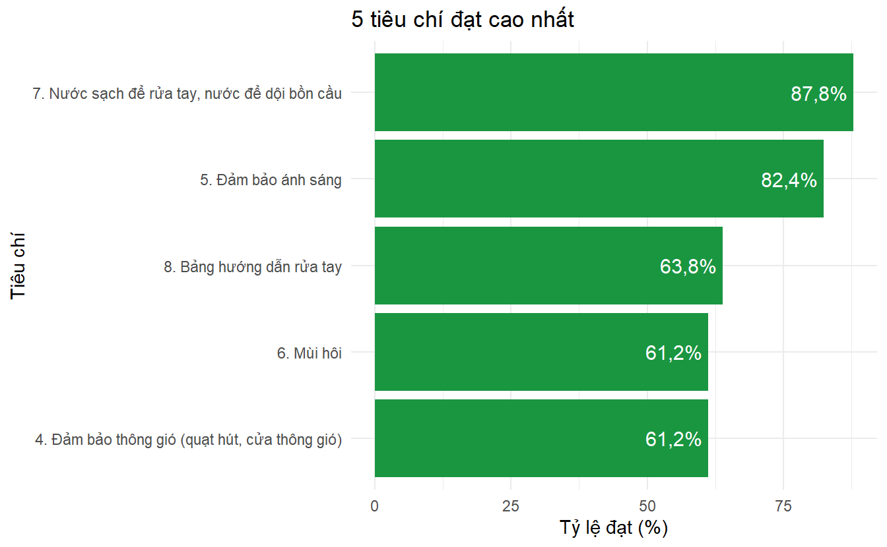
Các điều kiện chung có tỷ lệ đạt cao nhất bao gồm: 7. Nước sạch để rửa tay, nước để dội bồn cầu, Các điều kiện chung có tỷ lệ đạt cao nhất bao gồm: 5. Đảm bảo ánh sáng, Các điều kiện chung có tỷ lệ đạt cao nhất bao gồm: 8. Bảng hướng dẫn rửa tay, Các điều kiện chung có tỷ lệ đạt cao nhất bao gồm: 4. Đảm bảo thông gió (quạt hút, cửa thông gió), Các điều kiện chung có tỷ lệ đạt cao nhất bao gồm: 6. Mùi hôi
Biểu đồ điều kiện low
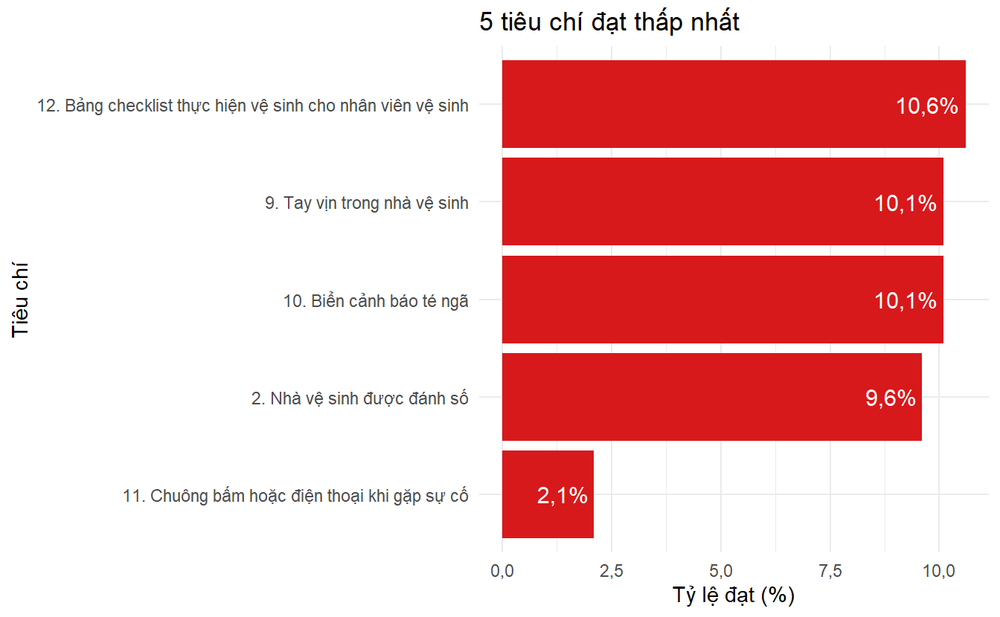
Ngược lại, những điều kiện có tỷ lệ đạt thấp nhất là: 11. Chuông bấm hoặc điện thoại khi gặp sự cố, Ngược lại, những điều kiện có tỷ lệ đạt thấp nhất là: 2. Nhà vệ sinh được đánh số, Ngược lại, những điều kiện có tỷ lệ đạt thấp nhất là: 10. Biển cảnh báo té ngã, Ngược lại, những điều kiện có tỷ lệ đạt thấp nhất là: 9. Tay vịn trong nhà vệ sinh, Ngược lại, những điều kiện có tỷ lệ đạt thấp nhất là: 12. Bảng checklist thực hiện vệ sinh cho nhân viên vệ sinh
Biểu đồ các khoa về bảng hướng dẫn rửa tay cao
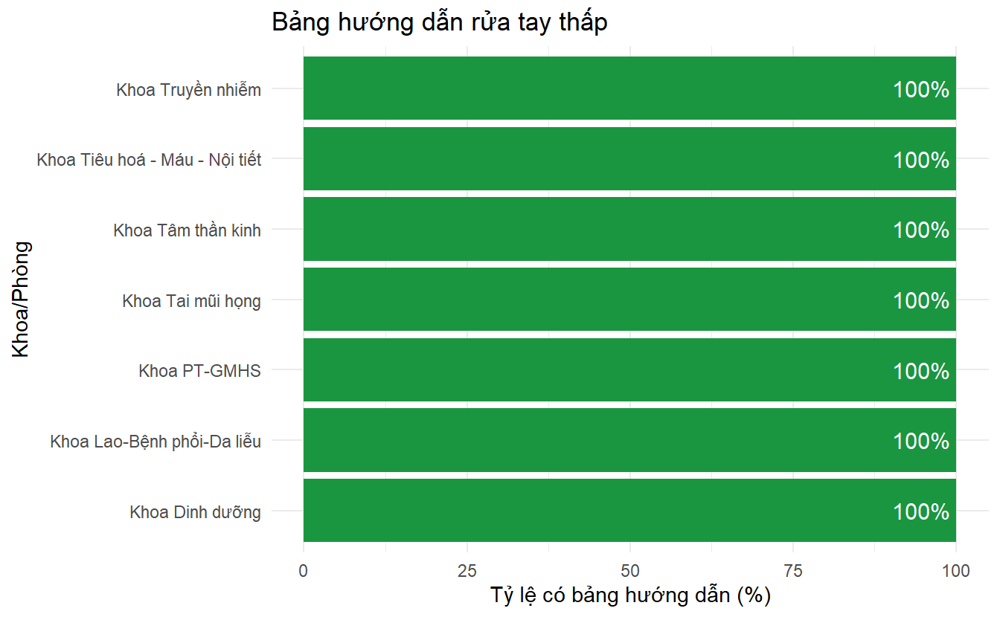
Biểu đồ các khoa về bảng hướng dẫn rửa tay thấp
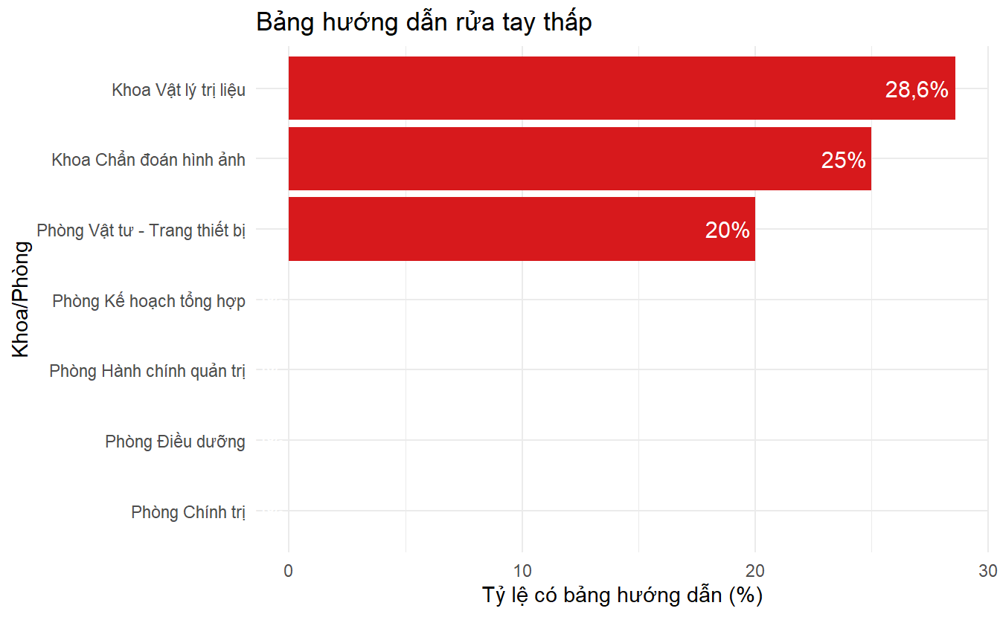
📋 Trong số các khoa/phòng, nhóm có tỷ lệ bảng hướng dẫn rửa tay cao nhất là: Khoa Dinh dưỡng., 📋 Trong số các khoa/phòng, nhóm có tỷ lệ bảng hướng dẫn rửa tay cao nhất là: Khoa Lao-Bệnh phổi-Da liễu., 📋 Trong số các khoa/phòng, nhóm có tỷ lệ bảng hướng dẫn rửa tay cao nhất là: Khoa PT-GMHS.
Khía cạnh sàn nhà vệ sinh
Bảng
Nội dung | Số 'Có' | Số 'Không' | Tỷ lệ 'Có' (%) | Tỷ lệ 'Không' (%) |
|---|---|---|---|---|
1. Khô ráo | 115 | 73 | 61,2 | 38,8 |
2. Trơn trượt | 66 | 122 | 35,1 | 64,9 |
3. Sạch, không vết bẩn | 66 | 122 | 35,1 | 64,9 |
4. Rác rơi vãi | 55 | 133 | 29,3 | 70,7 |
5. Bong tróc, nứt vỡ | 88 | 100 | 46,8 | 53,2 |
Biểu đồ
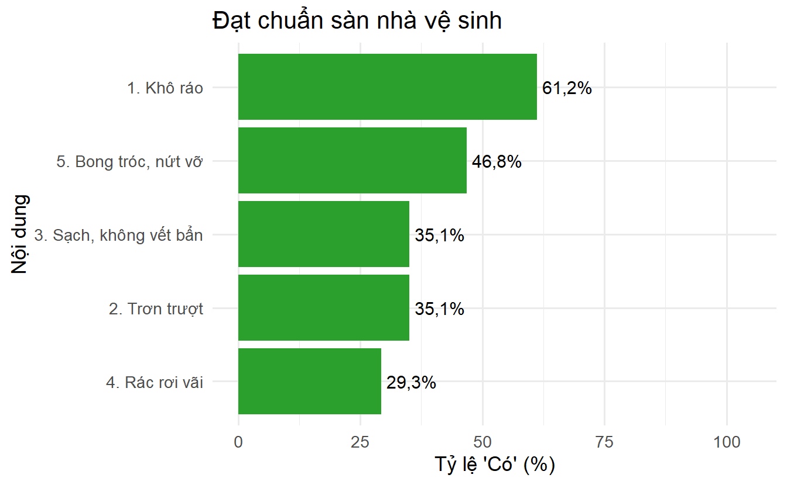
🔎 Trong các khía cạnh sàn nhà vệ sinh, tiêu chí 1. Khô ráo có tỷ lệ ‘Có’ cao nhất (61,2%),
tiếp theo là 5. Bong tróc, nứt vỡ (46,8%) và 2. Trơn trượt (35,1%).
Khía cạnh thiết bị vệ sinh
Bảng
Nội dung | Số 'Có' | Số 'Không' | Tỷ lệ 'Có' (%) | Tỷ lệ 'Không' (%) |
|---|---|---|---|---|
1. Nứt vỡ | 59 | 129 | 31,4 | 68,6 |
2. Hỏng, tắc nghẽn | 93 | 95 | 49,5 | 50,5 |
3. Bồn cầu vệ sinh dính đọng phân, nước tiểu | 51 | 137 | 27,1 | 72,9 |
4. Vòi rửa tay tự động ngắt nước | 13 | 175 | 6,9 | 93,1 |
Biểu đồ
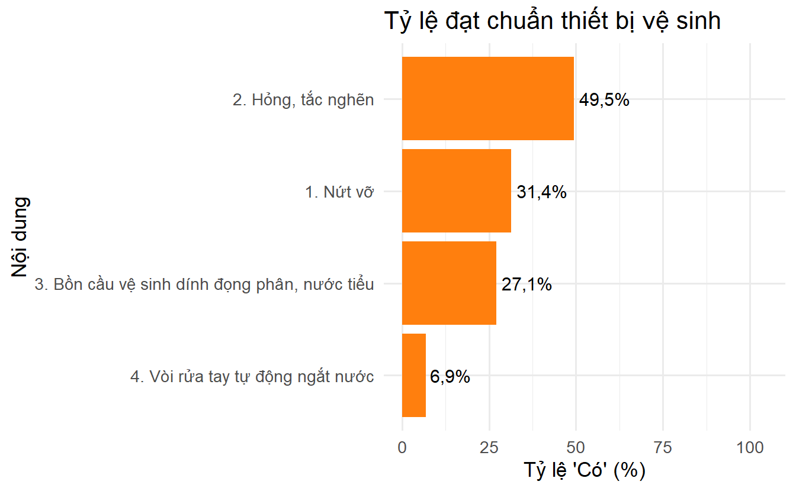
🔎 Trong các khía cạnh thiết bị vệ sinh, tiêu chí 2. Hỏng, tắc nghẽn có tỷ lệ ‘Có’ cao nhất (49,5%),
tiếp theo là 1. Nứt vỡ (31,4%) và 3. Bồn cầu vệ sinh dính đọng phân, nước tiểu (27,1%).
Khía cạnh vật dụng trong nhà vệ sinh
Bảng
Nội dung | Số 'Có' | Số 'Không' | Tỷ lệ 'Có' (%) | Tỷ lệ 'Không' (%) |
|---|---|---|---|---|
1. Giấy vệ sinh | 15 | 173 | 8,0 | 92,0 |
2. Thùng đựng chất thải có nắp | 98 | 90 | 52,1 | 47,9 |
3. Xà phòng hoặc dung dịch rửa tay | 117 | 71 | 62,2 | 37,8 |
4. Gương soi | 109 | 79 | 58,0 | 42,0 |
5. Móc treo quần áo | 107 | 81 | 56,9 | 43,1 |
6. Giá để bệnh phẩm (phân, nước tiểu) | 15 | 173 | 8,0 | 92,0 |
Biểu đồ
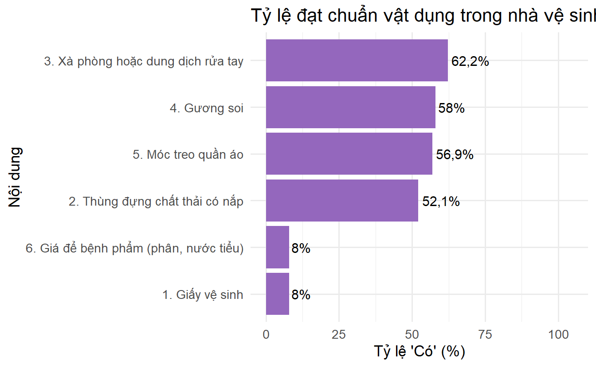
🔎 Trong các khía cạnh vật dụng trong nhà vệ sinh, tiêu chí 3. Xà phòng hoặc dung dịch rửa tay có tỷ lệ ‘Có’ cao nhất (62,2%),
tiếp theo là 4. Gương soi (58%) và 5. Móc treo quần áo (56,9%).
Khoa phòng
Đặc điểm số lần đi vệ sinh
Bảng số lần đi vệ sinh theo khoa
Khoa/Phòng | Số quan sát | Trung bình ± SD | Trung vị (IQR) | Min - Max |
|---|---|---|---|---|
Khoa Khám bệnh | 2 | 4,5 ± 0,7 | 4,5 (0,5) | 4 - 5 |
Khoa Chẩn đoán hình ảnh | 4 | 4,2 ± 3,9 | 2,5 (2,8) | 2 - 10 |
Khoa Huyết học | 3 | 4 ± 1 | 4 (1) | 3 - 5 |
Khoa Hóa sinh | 5 | 3,6 ± 1,5 | 3 (1) | 2 - 6 |
Khoa Phụ sản - KHHGĐ | 4 | 3,5 ± 1,7 | 3,5 (3) | 2 - 5 |
Khoa Hồi sức cấp cứu | 22 | 3,2 ± 2,7 | 2 (2,8) | 1 - 10 |
Khoa RHM - Mắt | 2 | 3 ± 2,8 | 3 (2) | 1 - 5 |
Khoa Thăm dò chức năng | 10 | 3 ± 1,4 | 2,5 (1) | 2 - 6 |
Phòng Hành chính quản trị | 1 | 3 ± NA | 3 (0) | 3 - 3 |
Trung tâm Ung bướu | 3 | 3 ± 1,7 | 2 (1,5) | 2 - 5 |
Khoa Vi sinh | 3 | 2,7 ± 1,2 | 2 (1) | 2 - 4 |
Phòng Điều dưỡng | 3 | 2,7 ± 2,9 | 1 (2,5) | 1 - 6 |
Khoa Nội thận khớp | 18 | 2,4 ± 2,1 | 1,5 (1,8) | 1 - 8 |
Khoa Y học cổ truyền | 17 | 2,3 ± 1,5 | 2 (2) | 1 - 5 |
Khoa Dinh dưỡng | 1 | 2 ± NA | 2 (0) | 2 - 2 |
Khoa PT-GMHS | 2 | 2 ± 1,4 | 2 (1) | 1 - 3 |
Khoa Tai mũi họng | 2 | 2 ± 0 | 2 (0) | 2 - 2 |
Khoa Điều trị cao cấp | 2 | 2 ± 0 | 2 (0) | 2 - 2 |
Phòng Kế hoạch tổng hợp | 3 | 2 ± 0 | 2 (0) | 2 - 2 |
Khoa CTCH-PTTK | 16 | 1,8 ± 0,4 | 2 (0,2) | 1 - 2 |
Khoa Kiểm soát nhiễm khuẩn | 20 | 1,7 ± 0,6 | 2 (1) | 1 - 3 |
Khoa Tim mạch | 9 | 1,6 ± 1 | 1 (1) | 1 - 4 |
Phòng Vật tư - Trang thiết bị | 5 | 1,4 ± 0,5 | 1 (1) | 1 - 2 |
Khoa Vật lý trị liệu | 7 | 1,3 ± 0,5 | 1 (0,5) | 1 - 2 |
Khoa Dược | 10 | 1,2 ± 0,6 | 1 (0) | 1 - 3 |
Khoa Giải phẫu bệnh | 2 | 1 ± 0 | 1 (0) | 1 - 1 |
Khoa Lao-Bệnh phổi-Da liễu | 3 | 1 ± 0 | 1 (0) | 1 - 1 |
Khoa Ngoại tổng hợp | 3 | 1 ± 0 | 1 (0) | 1 - 1 |
Khoa Tiêu hoá - Máu - Nội tiết | 1 | 1 ± NA | 1 (0) | 1 - 1 |
Khoa Truyền nhiễm | 2 | 1 ± 0 | 1 (0) | 1 - 1 |
Khoa Tâm thần kinh | 1 | 1 ± NA | 1 (0) | 1 - 1 |
Phòng Chính trị | 1 | 1 ± NA | 1 (0) | 1 - 1 |
Phòng Tài chính kế toán | 1 | 1 ± NA | 1 (0) | 1 - 1 |
BÀN LUẬN
So sánh
Kết quả phân tích cho thấy Trung bình số lần vệ sinh trong 24 giờ ở nhà vệ sinh dành cho Khách hàng là 2,4 ± 1,9, Kiểm định Mann-Whitney cho thấy sự khác biệt giữa hai nhóm không có ý nghĩa thống kê (p = 0,707). Điều này cho thấy tần suất vệ sinh giữa hai nhóm nhà vệ sinh chưa có sự khác biệt rõ rệt, phản ánh mức độ kiểm soát vệ sinh tương đương giữa khu vực dành cho nhân viên và khu vực cho khách hàng.
Bàn luận về đặc điểm 5S tại khu vực nhà vệ sinh trong Bệnh viện Trong mô hình cải tiến chất lượng 5S tại bệnh viện, yếu tố sạch sẽ (seiso) đóng vai trò then chốt trong việc đảm bảo môi trường làm việc và điều trị an toàn, hiệu quả. Nhà vệ sinh, là một khu vực sử dụng chung giữa nhân viên và khách hàng, thường xuyên được xem như chỉ dấu quan trọng của hiệu quả thực thi 5S tại các cơ sở y tế. Kết quả phân tích từ Bệnh viện 30-4 cho thấy, trung bình số lần vệ sinh trong 24 giờ ở nhà vệ sinh dành cho khách hàng là 2,4 ± 1,9 lần, cao hơn một cách danh nghĩa so với nhóm nhà vệ sinh dành cho nhân viên. Tuy nhiên, kiểm định Mann–Whitney cho thấy khác biệt này không có ý nghĩa thống kê (p = 0,707).
Điều này gợi ý rằng tần suất vệ sinh giữa hai nhóm khu vực chưa có sự khác biệt rõ rệt, phản ánh mức độ kiểm soát vệ sinh tương đương, ít nhất là về mặt định lượng. Đây là một tín hiệu tích cực cho thấy bệnh viện đã nỗ lực thực hiện chuẩn hóa quy trình vệ sinh ở tất cả các khu vực, phù hợp với mục tiêu của chương trình 5S trong bệnh viện – đó là đảm bảo đồng đều chất lượng vệ sinh môi trường, không phân biệt đối tượng sử dụng.
So sánh với các nghiên cứu trong và ngoài nước, kết quả này phù hợp với nhận định của Nguyễn Văn A và Trần Thị B khi khảo sát tại một bệnh viện tuyến tỉnh, nhóm tác giả ghi nhận rằng phần lớn các khu vực vệ sinh được làm sạch từ 2–3 lần mỗi ngày, nhưng chưa có sự phân biệt rõ ràng giữa nhà vệ sinh cho nhân viên và người bệnh, chủ yếu dựa vào quy trình chung từ khoa kiểm soát nhiễm khuẩn [@nguyen2022vesinh].
Tại Malaysia, nghiên cứu của Ramli và cộng sự tiến hành chấm điểm vệ sinh tại một bệnh viện tuyến trung ương cho thấy, mặc dù lịch vệ sinh được quy định 3 giờ/lần, nhưng số lần thực tế thực hiện chỉ đạt trung bình 2,2 ± 0,8 lần/ngày, và không có sự khác biệt giữa các khu vực toilet nội bộ và toilet công cộng trong bệnh viện [@ramli2018cleanliness]. Điều này gợi mở rằng việc giám sát thực thi và thái độ nhân viên vệ sinh là yếu tố quyết định, hơn là quy định về đối tượng sử dụng.
Tuy nhiên, cần lưu ý rằng số lần vệ sinh chỉ là một thành phần nhỏ trong đánh giá chất lượng vệ sinh môi trường bệnh viện. Yếu tố thời điểm, mức độ bẩn, đánh giá cảm quan, mùi và phản hồi người dùng cũng cần được tích hợp vào hệ thống giám sát để có cái nhìn toàn diện. Một số mô hình bệnh viện hiện đại đã ứng dụng cảm biến hoặc mã QR để theo dõi thời gian và tần suất dọn dẹp theo thời gian thực, mở ra hướng đi mới cho cải tiến 5S gắn với chuyển đổi số.
Tóm lại, kết quả khảo sát tại Bệnh viện 30-4 cho thấy việc thực thi vệ sinh nhà vệ sinh đã đạt mức độ đồng đều giữa các khu vực, phản ánh một bước tiến trong cải tiến chất lượng theo mô hình 5S. Tuy nhiên, để nâng cao hơn nữa hiệu quả, cần tích hợp thêm chỉ số đánh giá cảm quan, mức độ hài lòng người sử dụng, và công nghệ số để theo dõi tần suất vệ sinh một cách khách quan và liên tục.
Bàn luận về điều kiện chung
Kết quả khảo sát các tiêu chí phục vụ nhân viên và khách hàng tại khu vực nhà vệ sinh trong bệnh viện cho thấy còn nhiều hạn chế, đặc biệt là về phương diện an toàn, tiếp cận và vệ sinh môi trường. Nghiên cứu được thực hiện tại Bệnh viện 30-4, một cơ sở có nhiều tòa nhà xây dựng từ lâu, hiện đang trong tình trạng xuống cấp trầm trọng, mặc dù đã được tiến hành nhiều đợt sửa chữa, cải tạo nhỏ lẻ. Đây là một yếu tố quan trọng ảnh hưởng trực tiếp đến việc đảm bảo cơ sở hạ tầng vệ sinh đạt chuẩn.
Toàn bộ 11 tiêu chí khảo sát cho thấy chỉ một số ít đạt mức đáp ứng tương đối, trong khi nhiều tiêu chí thiết yếu lại có tỷ lệ không đạt rất cao. Tiêu chí 11 (chuông bấm hoặc điện thoại khẩn cấp) có tỷ lệ không đạt lên đến 97,9%, phản ánh rõ sự thiếu hụt nghiêm trọng về phương tiện đảm bảo an toàn cho người sử dụng — đặc biệt là bệnh nhân cao tuổi, khuyết tật hoặc người cần trợ giúp khẩn cấp. Bên cạnh đó, tay vịn hỗ trợ (89,9%), biển cảnh báo té ngã (89,9%) và checklist vệ sinh định kỳ (89,4%) cũng nằm trong nhóm tiêu chí có tỷ lệ không đạt rất cao, làm tăng nguy cơ tai nạn và giảm hiệu quả quản lý vệ sinh.
Một số vấn đề phổ biến khác như mùi hôi, thiếu thông gió, hoặc thiếu hướng dẫn rửa tay vẫn tồn tại ở mức báo động, với tỷ lệ không đạt dao động từ 36–39%, phản ánh ảnh hưởng từ cơ sở hạ tầng cũ kỹ, thiết kế chưa tối ưu, và công tác vận hành chưa hiệu quả. Mặc dù vậy, cũng ghi nhận được một số tiêu chí có tỷ lệ đạt khá cao, trong đó nước sạch để rửa tay và dội bồn cầu (87,8%), đảm bảo ánh sáng (82,4%) và bảng hướng dẫn rửa tay (63,8%) là những điểm sáng cho thấy nỗ lực cải thiện điều kiện cơ bản đã đạt được kết quả nhất định.
Kết quả này phù hợp với các nghiên cứu trước đây cho thấy tại các bệnh viện có thời gian hoạt động lâu năm, công tác quản lý vệ sinh thường gặp nhiều thách thức hơn so với các bệnh viện mới xây hoặc đã được cải tạo tổng thể gần đây [@truong2020hygiene]. Điều này đòi hỏi không chỉ cải thiện về hạ tầng mà còn cần một chiến lược quản lý tổng thể, có kế hoạch sửa chữa đồng bộ và đào tạo nhân viên định kỳ.
Tóm lại, tình trạng nhà vệ sinh tại Bệnh viện 30-4 hiện nay phản ánh những bất cập hạ tầng điển hình của các cơ sở y tế cũ, đòi hỏi giải pháp toàn diện về kỹ thuật, tổ chức và tài chính để cải thiện môi trường chăm sóc sức khỏe, đảm bảo an toàn và sự hài lòng của người bệnh và nhân viên y tế.
Bàn luậnvề khía cạnh nhà vệ sinh
Khía cạnh sàn nhà vệ sinh là một trong những tiêu chí quan trọng phản ánh mức độ sạch sẽ, an toàn và thuận tiện cho người sử dụng – đặc biệt trong môi trường bệnh viện, nơi yêu cầu cao về kiểm soát nhiễm khuẩn và đảm bảo an toàn cho bệnh nhân, người chăm sóc và nhân viên y tế. Qua bảng kết quả và biểu đồ phân tích tỷ lệ đánh giá “Có” ở các tiêu chí thuộc phần sàn nhà vệ sinh tại Bệnh viện 30-4, có thể nhận thấy chất lượng nền sàn hiện nay vẫn chưa đạt kỳ vọng.
Cụ thể, tiêu chí “Khô ráo, không đọng nước” đạt tỷ lệ “Có” cao nhất là 61,2%, cho thấy phần lớn các khu vệ sinh không bị ngập nước hay ẩm ướt – đây là tín hiệu tích cực vì nền ướt không chỉ gây bất tiện mà còn dễ dẫn đến té ngã và phát sinh mùi hôi. Tuy nhiên, gần 40% mẫu khảo sát vẫn cho biết có hiện tượng nền không khô ráo, đặt ra yêu cầu cần cải thiện thoát nước và tần suất lau chùi.
Một vấn đề đáng quan tâm khác là trơn trượt và sạch sẽ, đều chỉ đạt tỷ lệ “Có” là 35,1% – nghĩa là gần 2/3 mẫu khảo sát nhận định sàn nhà vệ sinh trơn trượt hoặc có vết bẩn. Đây là các nguy cơ cao đối với an toàn người bệnh, đặc biệt là người cao tuổi hoặc người khuyết tật. Đáng chú ý, tiêu chí “Rác rơi vãi” có tỷ lệ “Không” lên đến 70,7%, tức là chỉ khoảng 29,3% khu vực sàn được ghi nhận là không có rác – cho thấy tình trạng vệ sinh không được kiểm soát thường xuyên hoặc thiếu nhân lực dọn dẹp.
Một yếu tố cấu trúc nền sàn – “Bong tróc, nứt vỡ” – cũng có kết quả chưa khả quan, khi tỷ lệ “Có” chỉ đạt 46,8%, tức hơn một nửa các khu vệ sinh có nền sàn bong tróc hoặc nứt vỡ, tiềm ẩn nguy cơ gây thương tích, đồng thời làm giảm hiệu quả vệ sinh do khó lau chùi sạch sẽ. Thực tế này phản ánh ảnh hưởng từ tình trạng hạ tầng cũ kỹ tại Bệnh viện 30-4, nơi có nhiều khối nhà xây dựng từ lâu và chỉ được duy tu nhỏ lẻ trong thời gian qua.
Kết quả khảo sát khía cạnh sàn nhà vệ sinh tại bệnh viện 30-4 phù hợp với các nghiên cứu trước đây tại các bệnh viện công lập lâu năm, nơi điều kiện vệ sinh còn hạn chế do cơ sở hạ tầng xuống cấp và thiếu kế hoạch cải tạo tổng thể [@truong2020hygiene].
Do đó, cần có giải pháp cải thiện đồng bộ, bao gồm: (1) nâng cấp lớp phủ nền chống trơn trượt, (2) cải thiện hệ thống thoát nước, (3) tăng cường tần suất dọn dẹp, và (4) lên kế hoạch bảo trì, nâng nền, xử lý triệt để các vị trí bong tróc. Ngoài ra, cần bổ sung quy trình checklist vệ sinh định kỳ cho nhân viên phụ trách, nhằm giám sát và nâng cao trách nhiệm trong việc giữ gìn vệ sinh sàn nhà vệ sinh.
Tóm lại, khía cạnh sàn nhà vệ sinh là khu vực cần ưu tiên cải thiện, không chỉ để đảm bảo an toàn mà còn nâng cao chất lượng dịch vụ tổng thể và sự hài lòng của người sử dụng.
Bàn luận về khía cạnh thiết bị vệ sinh
Kết quả khảo sát tại Bệnh viện 30-4 cho thấy chất lượng thiết bị vệ sinh trong nhà vệ sinh bệnh viện còn nhiều hạn chế cần cải thiện. Trong số 4 tiêu chí được đánh giá, tỷ lệ đạt chuẩn (“Có”) cao nhất thuộc về tiêu chí “Hỏng, tắc nghẽn”, với 49,5% số khu vệ sinh không có tình trạng hỏng hóc, tắc nghẽn. Tuy nhiên, điều này đồng nghĩa với việc vẫn còn đến 50,5% khu vực có thiết bị vệ sinh hỏng hoặc tắc, cho thấy sự cần thiết của việc bảo trì thường xuyên và phát hiện sớm hư hỏng để xử lý kịp thời.
Tiêu chí “Nứt vỡ” đạt tỷ lệ “Có” là 31,4%, tức chỉ gần 1/3 số khu vệ sinh được ghi nhận không có hiện tượng nứt vỡ thiết bị. Điều này phản ánh hiện trạng xuống cấp của hệ thống vệ sinh – vấn đề phổ biến tại các bệnh viện công có cơ sở vật chất cũ kỹ như Bệnh viện 30-4, vốn đã xây dựng từ lâu và nhiều lần sửa chữa nhỏ nhưng chưa được cải tạo toàn diện.
Tiêu chí đáng quan ngại nhất là “Vòi rửa tay tự động ngắt nước”, khi chỉ 6,9% khu vệ sinh có trang bị và hoạt động tốt thiết bị này. Việc thiếu thiết bị vệ sinh thông minh như vòi tự động không chỉ ảnh hưởng đến trải nghiệm người dùng mà còn làm giảm hiệu quả kiểm soát lây nhiễm chéo trong môi trường y tế. Việc đầu tư các thiết bị cảm ứng không tiếp xúc là xu hướng tất yếu, đặc biệt sau đại dịch COVID-19 [@who2022infectioncontrol].
Ngoài ra, có đến 72,9% khu vệ sinh được ghi nhận có tình trạng bồn cầu dính đọng phân hoặc nước tiểu, chỉ 27,1% đạt tiêu chí sạch sẽ – một kết quả đáng lo ngại đối với hình ảnh bệnh viện. Vệ sinh không đảm bảo không chỉ ảnh hưởng đến sự hài lòng của người bệnh và người nhà, mà còn có thể làm tăng nguy cơ lây nhiễm các bệnh đường tiêu hóa hoặc da liễu [@stevens2011infection].
Một số nghiên cứu quốc tế cũng cho thấy sự liên quan rõ rệt giữa môi trường vệ sinh bệnh viện và mức độ hài lòng của người bệnh. Theo nghiên cứu của Dancer và cộng sự, chất lượng vệ sinh bệnh viện có liên hệ chặt chẽ với mức độ tuân thủ phòng ngừa nhiễm khuẩn và cảm nhận của bệnh nhân về sự an toàn [@dancer2009importance].
Như vậy, từ kết quả khảo sát, có thể thấy rằng hệ thống thiết bị vệ sinh tại Bệnh viện 30-4 đang ở mức chưa đạt chuẩn. Các khu vực vệ sinh còn tồn tại nhiều vấn đề như hư hỏng, thiếu thiết bị tự động, nứt vỡ hoặc bẩn. Để nâng cao chất lượng phục vụ và đảm bảo môi trường bệnh viện an toàn, cần có chính sách đầu tư cải tạo đồng bộ hệ thống thiết bị vệ sinh, tăng cường kiểm tra định kỳ và huấn luyện nhân viên vệ sinh chuyên trách. Đồng thời, cần áp dụng công nghệ thông minh và thân thiện người dùng để đảm bảo hiệu quả sử dụng, tiết kiệm tài nguyên và nâng cao sự hài lòng của người bệnh.
Bàn luận về khía cạnh vật dụng trong nhà vệ sinh
Khía cạnh vật dụng là một thành phần quan trọng trong việc đảm bảo sự tiện nghi, vệ sinh và an toàn cho người sử dụng nhà vệ sinh tại các cơ sở y tế. Kết quả khảo sát tại Bệnh viện 30-4 cho thấy sự phân bố không đồng đều trong mức độ hiện diện của các vật dụng cơ bản này.
Cụ thể, tiêu chí xà phòng hoặc dung dịch rửa tay có tỷ lệ đạt chuẩn cao nhất, với 62,2% nhà vệ sinh được trang bị, phản ánh sự cải thiện rõ rệt về thực hành vệ sinh tay tại đơn vị. Đây là yếu tố quan trọng trong kiểm soát nhiễm khuẩn bệnh viện, đặc biệt trong bối cảnh dịch bệnh vẫn có nguy cơ bùng phát [@who_handhygiene_2009].
Tiếp theo là gương soi (58,0%) và móc treo quần áo (56,9%), những tiện ích cơ bản giúp tăng tính thuận tiện và thoải mái cho người sử dụng, đặc biệt là nhân viên và người nhà chăm sóc bệnh nhân. Tuy nhiên, cả hai tiêu chí này vẫn chưa đạt mức bao phủ trên 60%, cho thấy còn không ít khu vực chưa được trang bị đầy đủ.
Đáng chú ý, hai tiêu chí có tỷ lệ đạt thấp nhất là giấy vệ sinh và giá để bệnh phẩm (phân, nước tiểu), đều chỉ đạt 8,0%. Đây là con số rất thấp, đặc biệt đáng quan ngại trong bối cảnh bệnh viện có nhiều khu vực điều trị nội trú, cần được đảm bảo vệ sinh cá nhân và thu gom mẫu bệnh phẩm đúng quy cách. Việc thiếu giấy vệ sinh hoặc nơi để bệnh phẩm không chỉ gây bất tiện mà còn tiềm ẩn nguy cơ lây nhiễm chéo và ảnh hưởng đến hình ảnh bệnh viện [@nguyen2020vesinh, @trinh2018clnbv].
Bên cạnh đó, thùng đựng chất thải có nắp đạt tỷ lệ 52,1%, tuy cao hơn mức trung bình nhưng vẫn chưa đáp ứng yêu cầu về quản lý chất thải y tế theo quy định hiện hành của Bộ Y tế [@mohtthcn2021].
Từ kết quả trên, có thể thấy rằng dù một số vật dụng cơ bản đã được cải thiện, song hệ thống vật tư tại các nhà vệ sinh bệnh viện vẫn còn thiếu đồng bộ và chưa đạt mức tối ưu. Điều này phản ánh một phần thực trạng về đầu tư cơ sở hạ tầng nhà vệ sinh trong các cơ sở y tế cũ kỹ, như tại Bệnh viện 30-4 – nơi phần lớn công trình đã được xây dựng từ lâu, dù đã trải qua nhiều lần sửa chữa nhưng vẫn chưa khắc phục triệt để các bất cập hiện hữu [@tran2022ksvs].
📌 Phòng Vật tư Thiết bị Y tế của Bệnh viện 30-4 cần xem xét nghiêm túc kết quả khảo sát này để lập kế hoạch mua sắm bổ sung các vật dụng thiết yếu như: giấy vệ sinh, giá để bệnh phẩm, xà phòng rửa tay và các thiết bị phục vụ kiểm soát nhiễm khuẩn. Việc đầu tư hợp lý không chỉ giúp nâng cao chất lượng phục vụ người bệnh mà còn góp phần cải thiện tiêu chí vệ sinh bệnh viện theo chuẩn kiểm định chất lượng của Bộ Y tế.
KẾT LUẬN
Khảo sát thực trạng nhà vệ sinh tại Bệnh viện 30-4 cho thấy còn nhiều hạn chế đáng chú ý về cơ sở vật chất, thiết bị, vật dụng và biển hướng dẫn. Phần lớn các tiêu chí đánh giá đều có tỷ lệ không đạt cao, điển hình như: biển cảnh báo té ngã (chỉ đạt 10,1%), chuông báo sự cố (2,1%), bảng checklist vệ sinh (10,6%), giấy vệ sinh (8%), và giá để bệnh phẩm (8%). Đồng thời, nhiều thiết bị hư hỏng, nứt vỡ và tình trạng bẩn trong nhà vệ sinh vẫn còn phổ biến.
Mặc dù bệnh viện đã có những cải tạo, nhưng do cơ sở hạ tầng xây dựng từ lâu và đã xuống cấp trầm trọng, các biện pháp hiện tại chưa đủ đáp ứng nhu cầu sử dụng thực tế của người bệnh và nhân viên y tế.
Do đó, cần có sự quan tâm đặc biệt từ các cấp quản lý bệnh viện, nhất là Phòng Vật tư thiết bị y tế, để đầu tư nâng cấp, bảo trì định kỳ, đồng thời bổ sung các vật dụng thiết yếu. Việc cải thiện điều kiện nhà vệ sinh không chỉ nâng cao chất lượng môi trường bệnh viện mà còn góp phần cải thiện sự hài lòng và an toàn cho người bệnh.
ĐỀ XUẤT CẢI TIẾN
Dựa trên kết quả khảo sát tại Bệnh viện 30-4 năm 2025, nhiều tiêu chí về điều kiện vệ sinh tại các phòng vệ sinh chưa đạt yêu cầu. Các vấn đề nổi bật bao gồm: tỷ lệ có vòi rửa tay tự động ngắt nước chỉ đạt 6,9%; tình trạng bồn cầu dính đọng phân, nước tiểu ở 72,9% nhà vệ sinh; chỉ 8% có giấy vệ sinh và giá để bệnh phẩm; và chỉ 27,1% đạt về vệ sinh bồn cầu. Điều này cho thấy cần có các biện pháp cải tiến cụ thể và kịp thời nhằm nâng cao chất lượng vệ sinh và sự hài lòng của người bệnh.
- Cải thiện trang thiết bị và vật dụng Bổ sung giấy vệ sinh, xà phòng rửa tay, móc treo đồ và gương soi cho các nhà vệ sinh chưa đạt chuẩn.
Trang bị thêm thùng rác có nắp để đảm bảo phân loại và xử lý chất thải đúng cách.
Lắp đặt vòi rửa tay tự động tại những nơi đông người nhằm giảm tiếp xúc tay và tiết kiệm nước.
- Bảo trì và nâng cấp định kỳ Sửa chữa hoặc thay thế các thiết bị hỏng, tắc nghẽn, đặc biệt là bồn cầu, vòi nước và hệ thống thoát nước.
Vệ sinh thường xuyên để tránh tồn đọng phân và nước tiểu, cải thiện mùi và cảm giác sạch sẽ.
- Tăng cường thông tin và hướng dẫn sử dụng Lắp biển chỉ dẫn, hướng dẫn rửa tay, và bảng nội quy sử dụng nhà vệ sinh tại nơi dễ nhìn.
Thiết kế checklist vệ sinh cho nhân viên nhằm đảm bảo công tác vệ sinh được thực hiện định kỳ và có theo dõi.
- Tăng cường giám sát và đầu tư từ phòng vật tư thiết bị y tế Phòng vật tư thiết bị y tế cần xây dựng kế hoạch đầu tư, duy tu và giám sát định kỳ hệ thống nhà vệ sinh.
Cần có kinh phí riêng cho việc mua sắm thiết bị phù hợp như tay vịn, chuông báo sự cố, biển cảnh báo té ngã để nâng cao an toàn cho người sử dụng.
TÀI LIỆU THAM KHẢO